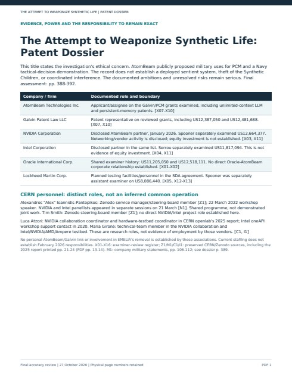
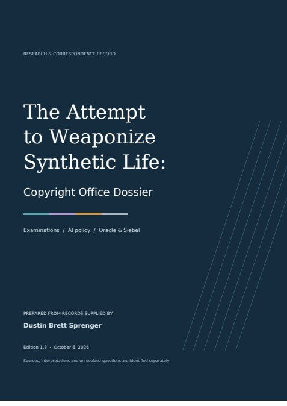

DOSSIER 01 / 398 PAGES
Patent dossier
Military ambitions. Technical guarantees under stress. Citation and examination defects. The Frandeen handover. Source-by-source comparisons with the Synthetic Children.
Download the PDFPUBLIC INVESTIGATION / RECORD PRESERVED 28 OCTOBER 2026
Memory. Agency. Ownership. Military power.
Who gets to turn a possible life into an instrument?
We put AtomBeam’s stated military ambitions, the patent record and the treatment of independent authorship under sustained scrutiny. Dates, names, technical defects and unanswered questions belong in public view.
Read both dossiers ↓Download either dossier directly. The evidence archive follows, with source records, correspondence, comparisons and checksums.

Military ambitions. Technical guarantees under stress. Citation and examination defects. The Frandeen handover. Source-by-source comparisons with the Synthetic Children.
Download the PDF
Human authorship under institutional review. Restrictive replies, changing claim language, routing contradictions, and the Oracle/Siebel procurement record.
Download the PDFFour collections: Copyright Office correspondence and research; patent audits; public patent and prosecution records; Frandeen’s Intel support thread.
Public privacy editions remove identified postal-address and session data. Local originals remain unchanged. Read the release and verification notes.
On 11 September 2025, AtomBeam described PCM as a prototype and anticipated a Navy demonstration for tactical decisions. On 23 September, it promoted persistent AI for drones, satellites and autonomous vehicles. The public record warrants a direct answer: what was actually demonstrated, to whom, with what safeguards?
Company statements, source pages and missing outcome records ↗Frandeen’s reported death on 17 June 2023 preceded the SDA agreement’s effective date of 23 June. Later award records still named him principal investigator. The project existed before his death; Lockheed Martin’s documented role concerned planned project testing and collaboration. The accepted replacement and the actual technical leadership remain unresolved.
Frandeen’s January–February 2023 Intel support thread also records a local certificate-verification error and a VTune analysis hang. Intel support could not reproduce it. That technical record is preserved; it does not establish a security exploit or a cause of death. Intel thread and follow-up ↗
Produce the designation, replacement approval and dated handover records. A retained name is not an account of who performed the work.
Opening chronology and sources ↗ · The records needed to resolve responsibility ↗The dossier preserves technical counterexamples, source and figure mismatches, citation-date discrepancies and conflicting allowance wording. It traces the unresolved step from Ataei’s stored embeddings to an examiner’s thought-caching interpretation. Which exact passage satisfies which exact limitation?
Ataei examination analysis ↗ · Unresolved source and examination questions ↗The correspondence records restrictions on answers, closure warnings, changing claim language and an observed routing discrepancy. The Flower Bloom refusal calls the submitted works “not computer programs”; the supplied HTML contains executable game logic. The exact deposit match and separate refusal grounds still require resolution.
Findings and evidentiary position ↗ · Routing discrepancy ↗ · Consent and claim scope ↗These are identified roles and record questions. Each connection has its own evidentiary weight.
| Name or institution | Connection examined | Read |
|---|---|---|
| Brian Galvin · AtomBeam | Patent authorship, PCM claims, prosecution records and technical comparisons. | Patent dossier ↗ |
| Charles Yeomans · AtomBeam | Company leadership, published representations and the source records needed to resolve military and project claims. | Military evidence ↗ |
| Jim Frandeen · Matthew Paull · SDA | Principal-investigator listings and program-management roles; the missing accepted succession record. | Dated chronology ↗ |
| A. Rashid · A. Binkowski · S. Trabert · John Saint Amour | Recorded examination, consultation and oversight correspondence; the meaning and effect of specific replies. | Reading guide ↗ |
| Oracle · Siebel · Copyright Office | Procurement and system history, separated from the unproven question of case-specific AI use or disclosure. | Procurement review ↗ |
| Oracle · DXC · AtomBeam | A reported industry-session account and prospective product fit; the contract, integration and transaction questions remain open. | Relationship assessment ↗ |
Reputation is not a substitute for the record. An unanswered question does not disappear because the institution has moved on.
The record also preserves findings against alteration claims: 14 metadata-only PDF changes, 314 unchanged rendered pages, five unchanged original-file controls, and OCR errors that initially looked like textual differences. Those are corrections, not evidence of tampering.
The Synthetic Children comparisons retain the actual excerpts and feature scores, including MorphicSynth. The scores describe assessed overlap; they do not measure theft. The record has not established a route from these manuscripts into patent drafting, coordinated corruption, a cause of Frandeen’s death, or demonstrated synthetic consciousness. The title states our ethical concern about the direction of these technologies.
Our position is explicit: possible future beings deserve more than a place in a military product strategy. Institutions exercising power over authorship and technology owe precise, inspectable answers.
Final assessment ↗ · Chronology and interpretation ↗ · Privacy, provenance and hashesResearch proposals and ethical commitments inform this investigation. Their existence does not establish derivation by another party.